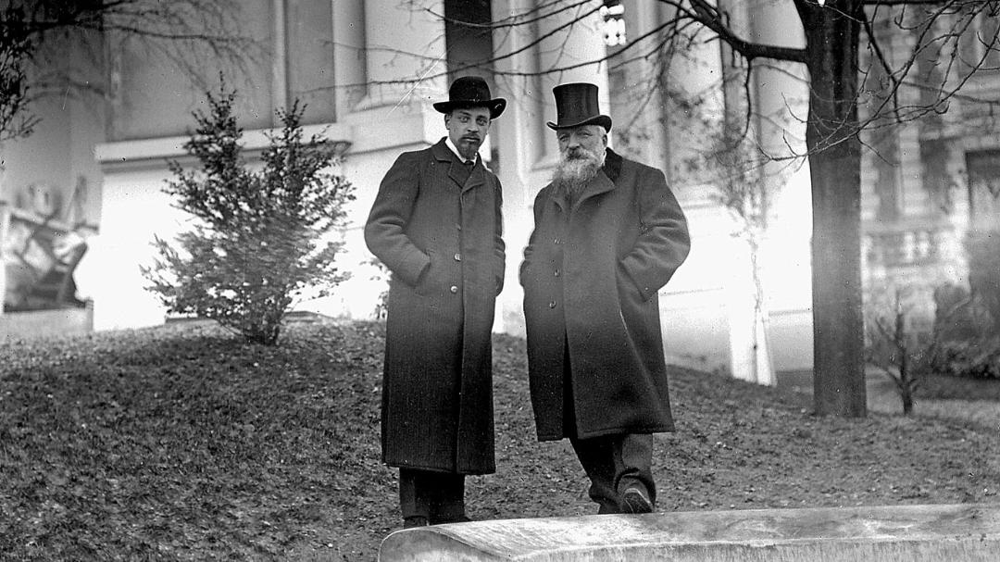
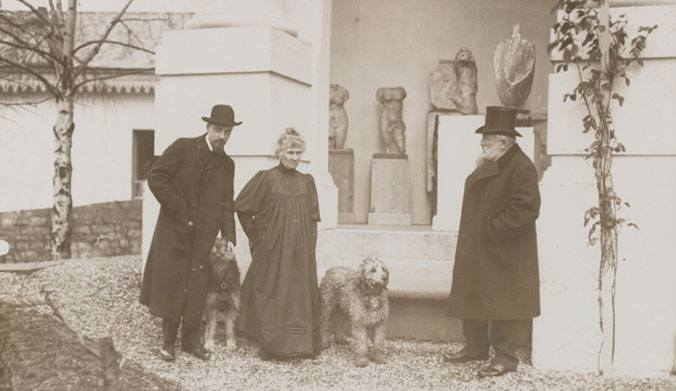

Rilke na starej fotografii
Rilke i Rodin
Rilke i Rodin w podparyskim Meudon. Do pierwszego spotkania poety ze sławnym rzeźbiarzem doszło w roku 1902, gdy Rilke zawitał w stolicy Francji, zbierając materiały do swej monografii. Trzy lata później, od września 1905 do maja 1906 roku, pracował u Rodina w charakterze jego sekretarza.
Rilke i Auguste Rodin, Meudon, rok 1905, fot. Albert Harlingue / Roger Viollet.
Rilke w towarzystwie Rodina i jego długoletniej przyjaciółki Rose Beuret oraz ich przymilnych psów.